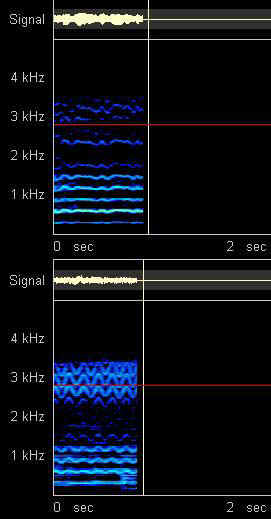
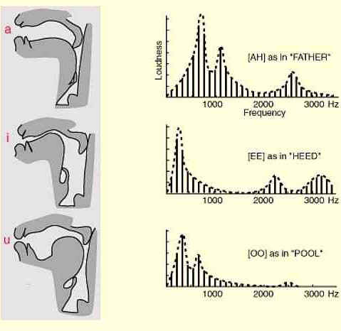

The Operatic Voice: Frequency Analysis of the Human Singing Voice (Ah-Vowel)
The top graph is a spectrum analysis of an untrained singing voice. The bottom graph is of a trained operatic tenor (Carlo Bergonzi). Notice the powerful amplitude at 2800 cycles (called the 'singers formant') and the prominent vibrato of the professional singer, both absent in the untrained voice. Vibrato imparts not only beauty and brilliance to the voice, but enables the singer to concentrate more energy on a note which enhances projection.

Vowels are produced by shaping the oral cavity and the pharynx of the vocal tract and are composed of three primary formants or peaks. N.B. falsetto (half voice or a simple the fundamental wave) sounds higher than full voice because of the absence of high overtones, e.g. 2800, in relation to which the fundamental sounds lower.
